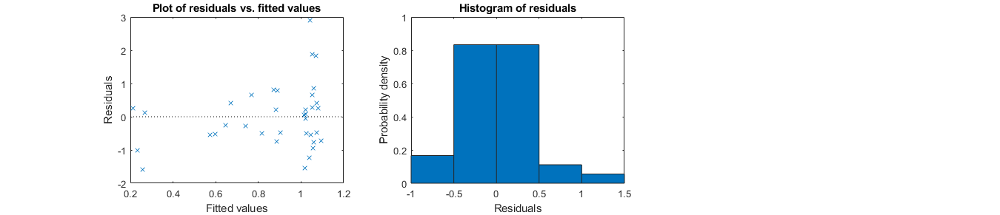
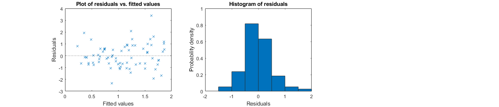
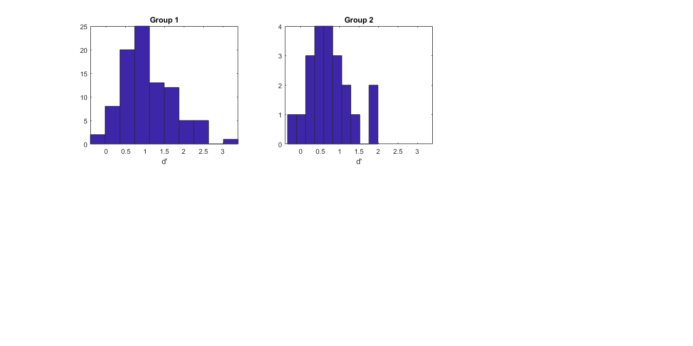

Contents
Smooth pursuit in macular degeneration
- This functions carries on the model statistical analysis for that project.
- Eye movement data, visibility and d' have been preprocessed and gathered in the master datafile.
- runs the GLM/GLME with the chopin toolbox.
- plots various graphs
- displays statistic conclusion messages
- saves figures from statistical analysis in figures folder
- Inputs: None. The function must run from the analysis folder with the master datafile being located in data.
- Functions used in this code should all be located in shared_codes.
- Outputs: None. But generates figures (folder figures), statistics (command window) and generates a joint markdown output in html by pressing Publish.
function GLME_smooth_pursuit try
close all;
clc;
Preprocessing
Creates the correct path structure
analysis_path = fileparts(mfilename('fullpath')); % root path addpath(genpath(fullfile(analysis_path,'shared_codes'))) % path with necessary codes data_path = fullfile(analysis_path,'data'); % path with the masterfile with data for analysis figure_path = fullfile(analysis_path,'figures'); % path for saving the figures % Reads data files file = 'data_smooth_pursuit_MD.xlsx'; data = readtable(fullfile(data_path,file),'Sheet','data'); % read file dispi('Loaded file ',file); % exclude the 3 instances for which participants did not follow pursuit instructions - they confirm not following instuctions and ended up with eccentricities >20 data(data.eccentricity>20,:) = []; data(isnan(data.fraction_occluded),:) = []; % also remove a line with NaN data % Normalize variable formats data.subject_ID = categorical(data.subject_ID); data.status = categorical(data.status); data.condition = categorical(data.condition); data = clean_names(data); % show a sample of the data disp('Data sample and size:') disp(data(1:10,:)) dispi(size(data,1),' lines of data found.')
Loaded file data_smooth_pursuit_MD.xlsx
Data sample and size:
subjectID conditionCode eyesTested status scotoma condition direction dprime fractionOccluded eccentricity omn
_________ _____________ ______________ _______ ____________ _________ _____________ _______ ________________ ____________ ________
C1 {'C1'} {'No_Scotoma'} control {'controls'} pursuit {'leftward' } 2.1383 0 1.2551 0.34046
C2 {'C2'} {'No_Scotoma'} control {'controls'} pursuit {'leftward' } 1.5695 0 0.61054 0.22687
C3 {'C3'} {'No_Scotoma'} control {'controls'} pursuit {'leftward' } 0.65321 0 1.4787 0.98788
C4 {'C4'} {'No_Scotoma'} control {'controls'} pursuit {'leftward' } 1.722 0 0.68591 0.2778
C1 {'C1'} {'No_Scotoma'} control {'controls'} fix {'rightward'} 1.8346 0 2.5405 0.080471
C2 {'C2'} {'No_Scotoma'} control {'controls'} fix {'rightward'} 1.1052 0 1.9286 0.26334
C3 {'C3'} {'No_Scotoma'} control {'controls'} fix {'rightward'} 0.97069 0 2.8653 0.21227
C1 {'C1'} {'No_Scotoma'} control {'controls'} pursuit {'rightward'} 2.4848 0 1.3806 0.23138
C3 {'C3'} {'No_Scotoma'} control {'controls'} pursuit {'rightward'} 1.0931 0 0.87279 0.32138
C2 {'C2'} {'No_Scotoma'} control {'controls'} pursuit {'rightward'} 1.5457 0 0.59828 0.43492
112 lines of data found.
Primary hypotheses on d' - fixation data only
- Explore how the data can be explained by oculomotor noise, fraction occluded and eccentricity
- Hypotheses:
- more eccentric stimuli result in worse d'
- more fraction occluded for the stimuli result in worse d'
- more oculomotor noise result in worse d'
% restrain data to fixation dataFixation = data(data.condition=='fix',:); disp(dataFixation(1:10,:)) dispi(size(dataFixation,1),' lines of data found.') % verify that distribution did not change check_distrib_indep(dataFixation.dprime(dataFixation.status=='control'),dataFixation.dprime(dataFixation.status=='patient'),'d'''); disp('Data are not distributed differently than normal') saveas(gcf,fullfile(figure_path,'fixation_dprime_distribution.fig')); snapnow; % Only apply the collinearity analysis on continuous predictors % Use Kendall correlations that are more powerful when using small samples disp('Collinearity') disp('Lines and columns are ordered as eccentricity,fractionOccluded and OMN.') [Tau,PValue] = corrplot2(dataFixation(:,{'eccentricity','fractionOccluded','omn'}),'type','Kendall') disp('No particular worries for collinearity given all correlations are well <0.8.') saveas(gcf,fullfile(figure_path,'fixation_factor_collinearity.fig')); snapnow; close; % define a model structure % a table with the data, here called data model.data = dataFixation; % the name of the dependent variable in the data structure, here it is data.initial_work_mem model.dv = 'dprime'; % its distribution among poisson, normal, gamma, inverse gaussian, binomial as previously determined model.distribution = 'normal'; % the maximal nb of factors to explore in the model model.max_nb_factors = 4; % n=10 so 100 data are used to estimate subjects' random effects (1 factor). 16 data can be used to estimate 2 more factors - we add 1 so that we can also look at the effect of non-significant factors. model.solid_factors = {'(1|subjectID)'}; %keep these between {} % a list of possible factors to be included, that can be removed if needed, and the interactions terms to explore model.liquid_factors = {'eccentricity','omn','fractionOccluded','fractionOccluded:omn','eccentricity:omn','fractionOccluded:eccentricity'}; %keep these between {} % a list of potential model links model.links = {'identity'}; % outliers/subjects to be removed - can be left empty model.exclude = []; % no warnings if 1 - careful with that option model.warning_off = 0; % whether to use a GLM (0) or a GLME (1). model.glme = 1; % run the model mdls = all_glm(model); % display diagnostics and results display_model(mdls{1}, model) %plot model ranked 1 - you can select any other models by rank according to the results on the various indicators provided saveas(gcf,fullfile(figure_path,'fixation_dprime_GLME_diagnostics.fig')); snapnow; close; figure('Color', 'w', 'units','normalized','outerposition',[0.1 0.1 0.8 0.6]); h=subplot(1,3,1); plot_covariate_effect(dataFixation.dprime, dataFixation.fractionOccluded.*100, h, 'fraction occluded (%)', 'd prime', 0, 0, mdls{1},1,model); h=subplot(1,3,2); plot_covariate_effect(dataFixation.dprime, dataFixation.eccentricity, h, 'eccentricity (deg)', 'd prime', 0, 0, mdls{1},1,model); title('Fixation condition only'); h=subplot(1,3,3); plot_interaction(dataFixation.dprime, (dataFixation.eccentricity<=median(dataFixation.eccentricity)),dataFixation.fractionOccluded.*100, h, 'fraction occluded (%)','d prime', {'eccentricity > median','eccentricity <= median'},mdls{1}, 1, model); % median is 2.36 saveas(gcf,fullfile(figure_path,'fixation_dprime_GLME_effects.fig')); snapnow; close; disp('Interpretation: there is no good model of the data, other than an intercept model. The first 3 best gave no significant factors.') disp('Figures are only here for comparison.') disp('To get (non-significant) p-values, we run the model #41.') display_model(mdls{41}, model)
subjectID conditionCode eyesTested status scotoma condition direction dprime fractionOccluded eccentricity omn
_________ _____________ ______________ _______ ______________ _________ _____________ _______ ________________ ____________ ________
C1 {'C1' } {'No_Scotoma'} control {'controls' } fix {'rightward'} 1.8346 0 2.5405 0.080471
C2 {'C2' } {'No_Scotoma'} control {'controls' } fix {'rightward'} 1.1052 0 1.9286 0.26334
C3 {'C3' } {'No_Scotoma'} control {'controls' } fix {'rightward'} 0.97069 0 2.8653 0.21227
C2 {'C2_M1L'} {'left_eye' } control {'controlsMS'} fix {'rightward'} 1.0416 0.28144 2.2341 0.11065
C1 {'C1_M1L'} {'left_eye' } control {'controlsMS'} fix {'rightward'} 0.73802 0.1058 3.4641 0.22492
C3 {'C3_M1L'} {'left_eye' } control {'controlsMS'} fix {'rightward'} 1.22 0.10002 3.3903 0.074712
C2 {'C2_M2L'} {'left_eye' } control {'controlsJC'} fix {'rightward'} 0.82079 0.05237 4.0501 0.073437
C3 {'C3_M2L'} {'left_eye' } control {'controlsJC'} fix {'rightward'} 0.70658 0.016529 5.0781 0.098031
C1 {'C1_M2L'} {'left_eye' } control {'controlsJC'} fix {'rightward'} 1.2478 0.048772 4.2615 0.14575
C2 {'C2_M2R'} {'right_eye' } control {'controlsJC'} fix {'leftward' } 0.99893 0.042592 1.5704 0.19964
36 lines of data found.
d' - Wilcoxon-Mann–Whitney (signed-ranks) U = 580, p = 0.0821
Data are not significantly different, but let's keep them separated
Kolmogorov-Smirnov tests for normality: Group 1 - KS = 0.11, p = 0.8442 and Group 2 - KS = 0.22, p = 0.8383
Data are not distributed differently than normal

Collinearity
Lines and columns are ordered as eccentricity,fractionOccluded and OMN.
Tau =
1.0000 0.2752 0.0127
0.2752 1.0000 0.0480
0.0127 0.0480 1.0000
PValue =
1.0000 0.0197 0.9246
0.0197 1.0000 0.6924
0.9246 0.6924 1.0000
No particular worries for collinearity given all correlations are well <0.8.
Running 41 GLMEs...
We tested 41 models.
Rank formula link AIC adj.R2(%) R2(%) norm.res.
____ _________________________________________________________________________________________________________ ____________ ______ _________ _____ _________
1 {'dprime ~ 1 + fractionOccluded:omn + (1|subjectID)' } {'identity'} 55.833 29.7 31.7 {'yes'}
2 {'dprime ~ 1 + eccentricity:omn + (1|subjectID)' } {'identity'} 56.003 30 32 {'yes'}
3 {'dprime ~ 1 + omn + (1|subjectID)' } {'identity'} 56.103 30 32 {'yes'}
4 {'dprime ~ 1 + fractionOccluded:eccentricity + (1|subjectID)' } {'identity'} 56.104 30.5 32.5 {'yes'}
5 {'dprime ~ 1 + eccentricity + (1|subjectID)' } {'identity'} 56.135 30.3 32.3 {'yes'}
6 {'dprime ~ 1 + fractionOccluded + (1|subjectID)' } {'identity'} 56.143 30.1 32.1 {'yes'}
7 {'dprime ~ 1 + fractionOccluded:omn + fractionOccluded:eccentricity + (1|subjectID)' } {'identity'} 57.304 28.7 32.8 {'yes'}
8 {'dprime ~ 1 + fractionOccluded + fractionOccluded:eccentricity + (1|subjectID)' } {'identity'} 57.431 30.6 34.5 {'yes'}
9 {'dprime ~ 1 + eccentricity + fractionOccluded:omn + (1|subjectID)' } {'identity'} 57.748 27.8 32 {'yes'}
10 {'dprime ~ 1 + fractionOccluded + fractionOccluded:omn + (1|subjectID)' } {'identity'} 57.771 27.7 31.8 {'yes'}
11 {'dprime ~ 1 + fractionOccluded:omn + eccentricity:omn + (1|subjectID)' } {'identity'} 57.831 27.5 31.7 {'yes'}
12 {'dprime ~ 1 + omn + fractionOccluded:omn + (1|subjectID)' } {'identity'} 57.831 27.6 31.7 {'yes'}
13 {'dprime ~ 1 + eccentricity:omn + fractionOccluded:eccentricity + (1|subjectID)' } {'identity'} 57.88 28.4 32.5 {'yes'}
14 {'dprime ~ 1 + eccentricity + eccentricity:omn + (1|subjectID)' } {'identity'} 57.923 28.2 32.3 {'yes'}
15 {'dprime ~ 1 + omn + eccentricity:omn + (1|subjectID)' } {'identity'} 57.987 27.9 32 {'yes'}
16 {'dprime ~ 1 + fractionOccluded + eccentricity:omn + (1|subjectID)' } {'identity'} 57.999 27.8 31.9 {'yes'}
17 {'dprime ~ 1 + omn + fractionOccluded:eccentricity + (1|subjectID)' } {'identity'} 58.051 28.2 32.3 {'yes'}
18 {'dprime ~ 1 + eccentricity + omn + (1|subjectID)' } {'identity'} 58.087 28 32.1 {'yes'}
19 {'dprime ~ 1 + omn + fractionOccluded + (1|subjectID)' } {'identity'} 58.091 27.8 31.9 {'yes'}
20 {'dprime ~ 1 + eccentricity + fractionOccluded:eccentricity + (1|subjectID)' } {'identity'} 58.103 28.4 32.5 {'yes'}
21 {'dprime ~ 1 + eccentricity + fractionOccluded + (1|subjectID)' } {'identity'} 58.114 28.1 32.2 {'yes'}
22 {'dprime ~ 1 + fractionOccluded + fractionOccluded:omn + fractionOccluded:eccentricity + (1|subjectID)'} {'identity'} 58.503 28.6 34.7 {'yes'}
23 {'dprime ~ 1 + fractionOccluded + eccentricity:omn + fractionOccluded:eccentricity + (1|subjectID)' } {'identity'} 58.572 29.5 35.6 {'yes'}
24 {'dprime ~ 1 + eccentricity + fractionOccluded + fractionOccluded:eccentricity + (1|subjectID)' } {'identity'} 58.866 29.9 35.9 {'yes'}
25 {'dprime ~ 1 + omn + fractionOccluded:omn + fractionOccluded:eccentricity + (1|subjectID)' } {'identity'} 59.194 26.8 33.1 {'yes'}
26 {'dprime ~ 1 + fractionOccluded:omn + eccentricity:omn + fractionOccluded:eccentricity + (1|subjectID)'} {'identity'} 59.221 26.5 32.8 {'yes'}
27 {'dprime ~ 1 + eccentricity + fractionOccluded:omn + fractionOccluded:eccentricity + (1|subjectID)' } {'identity'} 59.295 26.5 32.8 {'yes'}
28 {'dprime ~ 1 + omn + fractionOccluded + fractionOccluded:eccentricity + (1|subjectID)' } {'identity'} 59.32 28.2 34.3 {'yes'}
29 {'dprime ~ 1 + eccentricity + fractionOccluded + fractionOccluded:omn + (1|subjectID)' } {'identity'} 59.709 25.6 32 {'yes'}
30 {'dprime ~ 1 + fractionOccluded + fractionOccluded:omn + eccentricity:omn + (1|subjectID)' } {'identity'} 59.729 25.4 31.8 {'yes'}
31 {'dprime ~ 1 + eccentricity + omn + fractionOccluded:omn + (1|subjectID)' } {'identity'} 59.74 25.6 32 {'yes'}
32 {'dprime ~ 1 + eccentricity + fractionOccluded:omn + eccentricity:omn + (1|subjectID)' } {'identity'} 59.748 25.6 32 {'yes'}
33 {'dprime ~ 1 + omn + fractionOccluded + fractionOccluded:omn + (1|subjectID)' } {'identity'} 59.752 25.5 31.9 {'yes'}
34 {'dprime ~ 1 + omn + eccentricity:omn + fractionOccluded:eccentricity + (1|subjectID)' } {'identity'} 59.811 26.5 32.8 {'yes'}
35 {'dprime ~ 1 + eccentricity + omn + eccentricity:omn + (1|subjectID)' } {'identity'} 59.821 26.3 32.7 {'yes'}
36 {'dprime ~ 1 + omn + fractionOccluded:omn + eccentricity:omn + (1|subjectID)' } {'identity'} 59.831 25.3 31.7 {'yes'}
37 {'dprime ~ 1 + eccentricity + eccentricity:omn + fractionOccluded:eccentricity + (1|subjectID)' } {'identity'} 59.865 26.2 32.6 {'yes'}
38 {'dprime ~ 1 + eccentricity + fractionOccluded + eccentricity:omn + (1|subjectID)' } {'identity'} 59.903 25.9 32.2 {'yes'}
39 {'dprime ~ 1 + omn + fractionOccluded + eccentricity:omn + (1|subjectID)' } {'identity'} 59.986 25.6 32 {'yes'}
40 {'dprime ~ 1 + eccentricity + omn + fractionOccluded:eccentricity + (1|subjectID)' } {'identity'} 60.051 26 32.3 {'yes'}
41 {'dprime ~ 1 + eccentricity + omn + fractionOccluded + (1|subjectID)' } {'identity'} 60.064 25.7 32 {'yes'}
-------------------------------------------------------------------------------
Summary of variable formats in best model
Class Range InModel IsCategorical
_______________ ______________________________________________________ _______ _____________
subjectID {'categorical'} {[C1 C2 C3 C4 M1 M3 M4 M5 M6]} true true
fractionOccluded {'double' } {[ 0 0.6190]} true false
omn {'double' } {[ 0.0425 1.8360]} true false
Summary of best model
Generalized linear mixed-effects model fit by PL
Model information:
Number of observations 36
Fixed effects coefficients 2
Random effects coefficients 9
Covariance parameters 2
Distribution Normal
Link Identity
FitMethod MPL
Formula:
dprime ~ 1 + fractionOccluded:omn + (1 | subjectID)
Model fit statistics:
AIC BIC LogLikelihood Deviance
55.833 62.167 -23.916 47.833
Fixed effects coefficients (95% CIs):
Name Estimate SE tStat DF
{'(Intercept)' } 0.78632 0.15781 4.9826 34
{'fractionOccluded:omn'} -0.6984 1.1922 -0.58581 34
pValue Lower Upper
1.8093e-05 0.46561 1.107
0.56187 -3.1213 1.7245
Random effects covariance parameters:
Group: subjectID (9 Levels)
Name1 Name2 Type Estimate
{'(Intercept)'} {'(Intercept)'} {'std'} 0.29673
Group: Error
Name Estimate
{'sqrt(Dispersion)'} 0.4173
AIC: 55.8327
Adjusted R^2: 29.7%
R^2: 31.7%
Residuals: Kolmogorov test for normality (alpha 5%): KS = 0.13, p = 0.5385
Residuals are normal
RANDOM EFFECT COEFFICIENTS: DFMETHOD = 'RESIDUAL', ALPHA = 0.01
Group Level Name Estimate
{'subjectID'} {'C1'} {'(Intercept)'} 0.29269
{'subjectID'} {'C2'} {'(Intercept)'} 0.26035
{'subjectID'} {'C3'} {'(Intercept)'} 0.11834
{'subjectID'} {'C4'} {'(Intercept)'} -0.50501
{'subjectID'} {'M1'} {'(Intercept)'} -0.1008
{'subjectID'} {'M3'} {'(Intercept)'} -0.11023
{'subjectID'} {'M4'} {'(Intercept)'} 0.012041
{'subjectID'} {'M5'} {'(Intercept)'} 0.036106
{'subjectID'} {'M6'} {'(Intercept)'} -0.0034889
SEPred tStat DF pValue Lower Upper
0.17221 1.6996 34 0.098339 -0.17717 0.76255
0.17058 1.5262 34 0.1362 -0.20507 0.72576
0.18914 0.62569 34 0.53569 -0.3977 0.63439
0.19503 -2.5893 34 0.014053 -1.0371 0.02712
0.25058 -0.40226 34 0.69001 -0.78447 0.58288
0.24648 -0.44721 34 0.65756 -0.78273 0.56227
0.27972 0.043048 34 0.96591 -0.75113 0.77522
0.21994 0.16417 34 0.87057 -0.56398 0.63619
0.21951 -0.015894 34 0.98741 -0.60239 0.59541
No adjustment for multiple comparisons
Name Estimate tStat DF pValue adj_pValue H0_reject
________________________ ________ ________ __ _______ __________ _________
{'fractionOccluded:omn'} -0.6984 -0.58581 34 0.56187 0.56187 false
No significant effect of fractionOccluded:omn (t(34) = -0.59, adjusted p = 0.5619)
Local effect size for fractionOccluded:omn : Cohen s f2 = -0.01 (dubious)
-------------------------------------------------------------------------------
ans =
1×7 table
Name Estimate tStat DF pValue adj_pValue H0_reject
________________________________ ________ ________ __ _______ __________ _________
{'dprime: fractionOccluded:omn'} -0.6984 -0.58581 34 0.56187 0.56187 false


Interpretation: there is no good model of the data, other than an intercept model. The first 3 best gave no significant factors.
Figures are only here for comparison.
To get (non-significant) p-values, we run the model #41.
Summary of variable formats in best model
Class Range InModel IsCategorical
_______________ ______________________________________________________ _______ _____________
subjectID {'categorical'} {[C1 C2 C3 C4 M1 M3 M4 M5 M6]} true true
fractionOccluded {'double' } {[ 0 0.6190]} true false
eccentricity {'double' } {[ 1.4722 9.1094]} true false
omn {'double' } {[ 0.0425 1.8360]} true false
Summary of best model
Generalized linear mixed-effects model fit by PL
Model information:
Number of observations 36
Fixed effects coefficients 4
Random effects coefficients 9
Covariance parameters 2
Distribution Normal
Link Identity
FitMethod MPL
Formula:
dprime ~ 1 + fractionOccluded + eccentricity + omn + (1 | subjectID)
Model fit statistics:
AIC BIC LogLikelihood Deviance
60.064 69.565 -24.032 48.064
Fixed effects coefficients (95% CIs):
Name Estimate SE tStat DF
{'(Intercept)' } 0.73824 0.25091 2.9423 32
{'fractionOccluded'} -0.06373 0.41959 -0.15189 32
{'eccentricity' } 0.0065552 0.039966 0.16402 32
{'omn' } -0.064352 0.28467 -0.22606 32
pValue Lower Upper
0.0060158 0.22716 1.2493
0.88023 -0.9184 0.79094
0.87075 -0.074853 0.087963
0.8226 -0.64421 0.51551
Random effects covariance parameters:
Group: subjectID (9 Levels)
Name1 Name2 Type Estimate
{'(Intercept)'} {'(Intercept)'} {'std'} 0.3087
Group: Error
Name Estimate
{'sqrt(Dispersion)'} 0.41611
AIC: 60.0642
Adjusted R^2: 25.7%
R^2: 32%
Residuals: Kolmogorov test for normality (alpha 5%): KS = 0.11, p = 0.7453
Residuals are normal
RANDOM EFFECT COEFFICIENTS: DFMETHOD = 'RESIDUAL', ALPHA = 0.01
Group Level Name Estimate
{'subjectID'} {'C1'} {'(Intercept)'} 0.31879
{'subjectID'} {'C2'} {'(Intercept)'} 0.2879
{'subjectID'} {'C3'} {'(Intercept)'} 0.13846
{'subjectID'} {'C4'} {'(Intercept)'} -0.5087
{'subjectID'} {'M1'} {'(Intercept)'} -0.12326
{'subjectID'} {'M3'} {'(Intercept)'} -0.12093
{'subjectID'} {'M4'} {'(Intercept)'} -0.05936
{'subjectID'} {'M5'} {'(Intercept)'} 0.035192
{'subjectID'} {'M6'} {'(Intercept)'} 0.031905
SEPred tStat DF pValue Lower Upper
0.17871 1.7838 32 0.083938 -0.17061 0.80819
0.17772 1.62 32 0.11504 -0.19877 0.77457
0.195 0.71007 32 0.4828 -0.39554 0.67246
0.2034 -2.501 32 0.017695 -1.0657 0.048296
0.25645 -0.48066 32 0.63403 -0.82554 0.57901
0.25352 -0.47699 32 0.63661 -0.81518 0.57333
0.2674 -0.22199 32 0.82573 -0.79164 0.67292
0.23049 0.15268 32 0.87961 -0.59601 0.6664
0.27446 0.11624 32 0.90818 -0.71971 0.78352
No adjustment for multiple comparisons
Name Estimate tStat DF pValue adj_pValue H0_reject
____________________ _________ ________ __ _______ __________ _________
{'omn' } -0.064352 -0.22606 32 0.8226 0.8226 false
{'eccentricity' } 0.0065552 0.16402 32 0.87075 0.87075 false
{'fractionOccluded'} -0.06373 -0.15189 32 0.88023 0.88023 false
No significant effect of omn (t(32) = -0.23, adjusted p = 0.8226)
No significant effect of eccentricity (t(32) = 0.16, adjusted p = 0.8707)
No significant effect of fractionOccluded (t(32) = -0.15, adjusted p = 0.8802)
Local effect size for fractionOccluded : Cohen s f2 = 0 (dubious)
Local effect size for eccentricity : Cohen s f2 = 0 (dubious)
Local effect size for omn : Cohen s f2 = 0 (dubious)
-------------------------------------------------------------------------------
ans =
3×7 table
Name Estimate tStat DF pValue adj_pValue H0_reject
____________________________ _________ ________ __ _______ __________ _________
{'dprime: omn' } -0.064352 -0.22606 32 0.8226 0.8226 false
{'dprime: eccentricity' } 0.0065552 0.16402 32 0.87075 0.87075 false
{'dprime: fractionOccluded'} -0.06373 -0.15189 32 0.88023 0.88023 false
 Same analysis restrained to pursuit data only
- restrain data to fixation
dataPursuit = data(data.condition=='pursuit',:); disp(dataPursuit(1:10,:)) dispi(size(dataPursuit,1),' lines of data found.') % verify that distribution did not change check_distrib_indep(dataPursuit.dprime(dataPursuit.status=='control'),dataPursuit.dprime(dataPursuit.status=='patient'),'d'''); disp('Data are not distributed differently than normal') saveas(gcf,fullfile(figure_path,'pursuit_dprime_distribution.fig')); snapnow; % Only apply the collinearity analysis on continuous predictors % Use Kendall correlations that are more powerful when using small samples disp('Collinearity') disp('Lines and columns are ordered as eccentricity,fractionOccluded and OMN.') [Tau,PValue] = corrplot2(dataPursuit(:,{'eccentricity','fractionOccluded','omn'}),'type','Kendall') disp('No particular worries for collinearity given all correlations are well <0.8.') saveas(gcf,fullfile(figure_path,'pursuit_factor_collinearity.fig')); snapnow; close; % define a model structure % a table with the data, here called data model.data = dataPursuit; % the name of the dependent variable in the data structure, here it is data.initial_work_mem model.dv = 'dprime'; % its distribution among poisson, normal, gamma, inverse gaussian, binomial as previously determined model.distribution = 'normal'; % the maximal nb of factors to explore in the model model.max_nb_factors = 4; % n=10 so 100 data are used to estimate subjects' random effects (1 factor). 16 data can be used to estimate 2 more factors - we add 1 so that we can also look at the effect of non-significant factors. model.solid_factors = {'(1|subjectID)'}; %keep these between {} % a list of possible factors to be included, that can be removed if needed, and the interactions terms to explore model.liquid_factors = {'eccentricity','omn','fractionOccluded','fractionOccluded:omn','eccentricity:omn','fractionOccluded:eccentricity'}; %keep these between {} % a list of potential model links model.links = {'identity'}; % outliers/subjects to be removed - can be left empty model.exclude = []; % no warnings if 1 - careful with that option model.warning_off = 0; % whether to use a GLM (0) or a GLME (1). model.glme = 1; % run the model mdls = all_glm(model); % display diagnostics and results display_model(mdls{1}, model) %plot model ranked 1 - you can select any other models by rank according to the results on the various indicators provided saveas(gcf,fullfile(figure_path,'pursuit_dprime_GLME_diagnostics.fig')); snapnow; close; figure('Color', 'w', 'units','normalized','outerposition',[0.1 0.1 0.8 0.6]); h=subplot(1,3,1); plot_covariate_effect(dataPursuit.dprime, dataPursuit.fractionOccluded.*100, h, 'fraction occluded (%)', 'd prime', 0, 0, mdls{1},1,model); h=subplot(1,3,2); plot_covariate_effect(dataPursuit.dprime, dataPursuit.eccentricity, h, 'eccentricity (deg)', 'd prime', 0, 0, mdls{1},1,model); title('Pursuit condition only'); h=subplot(1,3,3); plot_interaction(dataPursuit.dprime, (dataPursuit.fractionOccluded<=median(dataPursuit.fractionOccluded)),dataPursuit.eccentricity, h, 'eccentricity','d prime', {'fraction occluded > median','fraction occluded <= median'},mdls{1}, 1, model); % median is 19.7% saveas(gcf,fullfile(figure_path,'pursuit_dprime_GLME_effects.fig')); snapnow; close; disp('The first model is undeniably the best fit for the data with best AIC but also best adj. R2 and best R2.') disp('Interpretation: there is mostly a large effect of fraction occluded. There is also a small effect of eccentricity and a small interaction effect between them.') disp('Larger eccentricities and fraction occluded are associated with worse d'' results, and interacting, with the effect of fraction occluded decreasing with larger eccentricities.') disp('When running the first model that includes OMN to see the effect of oculo-motor noise, we find that its effect is dubious and non-significant.')
subjectID conditionCode eyesTested status scotoma condition direction dprime fractionOccluded eccentricity omn
_________ _____________ ______________ _______ ______________ _________ _____________ _______ ________________ ____________ _______
C1 {'C1' } {'No_Scotoma'} control {'controls' } pursuit {'leftward' } 2.1383 0 1.2551 0.34046
C2 {'C2' } {'No_Scotoma'} control {'controls' } pursuit {'leftward' } 1.5695 0 0.61054 0.22687
C3 {'C3' } {'No_Scotoma'} control {'controls' } pursuit {'leftward' } 0.65321 0 1.4787 0.98788
C4 {'C4' } {'No_Scotoma'} control {'controls' } pursuit {'leftward' } 1.722 0 0.68591 0.2778
C1 {'C1' } {'No_Scotoma'} control {'controls' } pursuit {'rightward'} 2.4848 0 1.3806 0.23138
C3 {'C3' } {'No_Scotoma'} control {'controls' } pursuit {'rightward'} 1.0931 0 0.87279 0.32138
C2 {'C2' } {'No_Scotoma'} control {'controls' } pursuit {'rightward'} 1.5457 0 0.59828 0.43492
C4 {'C4' } {'No_Scotoma'} control {'controls' } pursuit {'rightward'} 0.47457 0 1.3844 0.45356
C2 {'C2_M1L'} {'left_eye' } control {'controlsMS'} pursuit {'leftward' } 1.6228 0.26984 3.8964 0.54179
C1 {'C1_M1L'} {'left_eye' } control {'controlsMS'} pursuit {'leftward' } 2.5204 0.0059565 4.7432 0.3387
76 lines of data found.
d' - Wilcoxon-Mann–Whitney (signed-ranks) U = 2516, p = 0.0839
Data are not significantly different, but let's keep them separated
Kolmogorov-Smirnov tests for normality: Group 1 - KS = 0.13, p = 0.2568 and Group 2 - KS = 0.16, p = 0.8037
Data are not distributed differently than normal
Collinearity
Lines and columns are ordered as eccentricity,fractionOccluded and OMN.
Tau =
1.0000 0.2748 0.3392
0.2748 1.0000 -0.0110
0.3392 -0.0110 1.0000
PValue =
1.0000 0.0005 0.0000
0.0005 1.0000 0.8928
0.0000 0.8928 1.0000
No particular worries for collinearity given all correlations are well <0.8.
Running 41 GLMEs...
We tested 41 models.
Rank formula link AIC adj.R2(%) R2(%) norm.res.
____ _________________________________________________________________________________________________________ ____________ ______ _________ _____ _________
1 {'dprime ~ 1 + eccentricity + fractionOccluded + fractionOccluded:eccentricity + (1|subjectID)' } {'identity'} 138 42 44.4 {'yes'}
2 {'dprime ~ 1 + fractionOccluded + eccentricity:omn + fractionOccluded:eccentricity + (1|subjectID)' } {'identity'} 138.27 41.7 44.1 {'yes'}
3 {'dprime ~ 1 + fractionOccluded + (1|subjectID)' } {'identity'} 139.49 40.7 41.5 {'yes'}
4 {'dprime ~ 1 + omn + fractionOccluded + fractionOccluded:eccentricity + (1|subjectID)' } {'identity'} 139.52 41.1 43.4 {'yes'}
5 {'dprime ~ 1 + fractionOccluded + eccentricity:omn + (1|subjectID)' } {'identity'} 139.85 39.9 41.5 {'yes'}
6 {'dprime ~ 1 + omn + fractionOccluded + (1|subjectID)' } {'identity'} 139.97 39.7 41.3 {'yes'}
7 {'dprime ~ 1 + fractionOccluded + fractionOccluded:eccentricity + (1|subjectID)' } {'identity'} 140.02 41.5 43 {'yes'}
8 {'dprime ~ 1 + fractionOccluded + fractionOccluded:omn + (1|subjectID)' } {'identity'} 140.06 39.7 41.4 {'yes'}
9 {'dprime ~ 1 + fractionOccluded + fractionOccluded:omn + fractionOccluded:eccentricity + (1|subjectID)'} {'identity'} 140.31 40.7 43.1 {'yes'}
10 {'dprime ~ 1 + eccentricity + fractionOccluded + (1|subjectID)' } {'identity'} 141.05 39.7 41.3 {'yes'}
11 {'dprime ~ 1 + eccentricity + fractionOccluded + eccentricity:omn + (1|subjectID)' } {'identity'} 141.37 39.6 42 {'yes'}
12 {'dprime ~ 1 + fractionOccluded + fractionOccluded:omn + eccentricity:omn + (1|subjectID)' } {'identity'} 141.47 38.9 41.4 {'yes'}
13 {'dprime ~ 1 + omn + fractionOccluded + fractionOccluded:omn + (1|subjectID)' } {'identity'} 141.62 38.8 41.2 {'yes'}
14 {'dprime ~ 1 + omn + fractionOccluded + eccentricity:omn + (1|subjectID)' } {'identity'} 141.82 39 41.4 {'yes'}
15 {'dprime ~ 1 + eccentricity + fractionOccluded + fractionOccluded:omn + (1|subjectID)' } {'identity'} 141.91 38.8 41.2 {'yes'}
16 {'dprime ~ 1 + eccentricity + omn + fractionOccluded + (1|subjectID)' } {'identity'} 141.94 39 41.4 {'yes'}
17 {'dprime ~ 1 + fractionOccluded:omn + (1|subjectID)' } {'identity'} 147.44 25.5 26.5 {'yes'}
18 {'dprime ~ 1 + fractionOccluded:omn + fractionOccluded:eccentricity + (1|subjectID)' } {'identity'} 148.26 27 29 {'yes'}
19 {'dprime ~ 1 + omn + fractionOccluded:omn + (1|subjectID)' } {'identity'} 149.03 26.2 28.2 {'yes'}
20 {'dprime ~ 1 + eccentricity + fractionOccluded:omn + (1|subjectID)' } {'identity'} 149.06 24.4 26.4 {'yes'}
21 {'dprime ~ 1 + fractionOccluded:omn + eccentricity:omn + (1|subjectID)' } {'identity'} 149.32 25.2 27.2 {'yes'}
22 {'dprime ~ 1 + eccentricity + fractionOccluded:omn + eccentricity:omn + (1|subjectID)' } {'identity'} 149.46 27 29.9 {'yes'}
23 {'dprime ~ 1 + eccentricity + omn + fractionOccluded:omn + (1|subjectID)' } {'identity'} 149.69 27 29.9 {'yes'}
24 {'dprime ~ 1 + omn + fractionOccluded:omn + fractionOccluded:eccentricity + (1|subjectID)' } {'identity'} 149.97 27.4 30.3 {'yes'}
25 {'dprime ~ 1 + fractionOccluded:omn + eccentricity:omn + fractionOccluded:eccentricity + (1|subjectID)'} {'identity'} 150.07 27 30 {'yes'}
26 {'dprime ~ 1 + eccentricity + fractionOccluded:omn + fractionOccluded:eccentricity + (1|subjectID)' } {'identity'} 150.26 26 29 {'yes'}
27 {'dprime ~ 1 + omn + fractionOccluded:omn + eccentricity:omn + (1|subjectID)' } {'identity'} 150.85 25.5 28.5 {'yes'}
28 {'dprime ~ 1 + fractionOccluded:eccentricity + (1|subjectID)' } {'identity'} 155.62 20.9 22 {'yes'}
29 {'dprime ~ 1 + omn + fractionOccluded:eccentricity + (1|subjectID)' } {'identity'} 157.2 19.1 21.3 {'yes'}
30 {'dprime ~ 1 + eccentricity:omn + fractionOccluded:eccentricity + (1|subjectID)' } {'identity'} 157.43 19.3 21.5 {'yes'}
31 {'dprime ~ 1 + eccentricity + fractionOccluded:eccentricity + (1|subjectID)' } {'identity'} 157.61 20 22.1 {'yes'}
32 {'dprime ~ 1 + eccentricity + omn + fractionOccluded:eccentricity + (1|subjectID)' } {'identity'} 158.7 19 22.3 {'yes'}
33 {'dprime ~ 1 + eccentricity + eccentricity:omn + fractionOccluded:eccentricity + (1|subjectID)' } {'identity'} 158.77 19.4 22.6 {'yes'}
34 {'dprime ~ 1 + omn + eccentricity:omn + fractionOccluded:eccentricity + (1|subjectID)' } {'identity'} 159.1 18.2 21.5 {'yes'}
35 {'dprime ~ 1 + eccentricity + (1|subjectID)' } {'identity'} 164.76 5.7 7 {'yes'}
36 {'dprime ~ 1 + eccentricity + eccentricity:omn + (1|subjectID)' } {'identity'} 166.26 5.5 8 {'yes'}
37 {'dprime ~ 1 + eccentricity + omn + (1|subjectID)' } {'identity'} 166.61 4.8 7.3 {'yes'}
38 {'dprime ~ 1 + eccentricity:omn + (1|subjectID)' } {'identity'} 167.95 1.6 2.9 {'yes'}
39 {'dprime ~ 1 + eccentricity + omn + eccentricity:omn + (1|subjectID)' } {'identity'} 168.11 4.2 8.1 {'yes'}
40 {'dprime ~ 1 + omn + (1|subjectID)' } {'identity'} 168.66 0.7 2 {'yes'}
41 {'dprime ~ 1 + omn + eccentricity:omn + (1|subjectID)' } {'identity'} 169.86 0.4 3.1 {'yes'}
-------------------------------------------------------------------------------
Summary of variable formats in best model
Class Range InModel IsCategorical
_______________ ____________________________________________________________ _______ _____________
subjectID {'categorical'} {[C1 C2 C3 C4 M1 M2 M3 M4 M5 M6]} true true
fractionOccluded {'double' } {[ 0 0.9179]} true false
eccentricity {'double' } {[ 0.5983 16.5688]} true false
Summary of best model
Generalized linear mixed-effects model fit by PL
Model information:
Number of observations 76
Fixed effects coefficients 4
Random effects coefficients 10
Covariance parameters 2
Distribution Normal
Link Identity
FitMethod MPL
Formula:
dprime ~ 1 + fractionOccluded*eccentricity + (1 | subjectID)
Model fit statistics:
AIC BIC LogLikelihood Deviance
138 151.98 -62.998 126
Fixed effects coefficients (95% CIs):
Name Estimate SE tStat
{'(Intercept)' } 1.6287 0.17155 9.494
{'fractionOccluded' } -2.2194 0.4418 -5.0235
{'eccentricity' } -0.055567 0.026295 -2.1132
{'fractionOccluded:eccentricity'} 0.18517 0.080323 2.3053
DF pValue Lower Upper
72 2.5292e-14 1.2867 1.9707
72 3.5603e-06 -3.1001 -1.3387
72 0.03805 -0.10799 -0.0031485
72 0.024037 0.025044 0.34529
Random effects covariance parameters:
Group: subjectID (10 Levels)
Name1 Name2 Type Estimate
{'(Intercept)'} {'(Intercept)'} {'std'} 0.26179
Group: Error
Name Estimate
{'sqrt(Dispersion)'} 0.52268
AIC: 137.9952
Adjusted R^2: 42%
R^2: 44.4%
Residuals: Kolmogorov test for normality (alpha 5%): KS = 0.08, p = 0.6507
Residuals are normal
RANDOM EFFECT COEFFICIENTS: DFMETHOD = 'RESIDUAL', ALPHA = 0.01
Group Level Name Estimate
{'subjectID'} {'C1'} {'(Intercept)'} 0.30886
{'subjectID'} {'C2'} {'(Intercept)'} 0.16174
{'subjectID'} {'C3'} {'(Intercept)'} 0.11923
{'subjectID'} {'C4'} {'(Intercept)'} -0.32241
{'subjectID'} {'M1'} {'(Intercept)'} -0.0575
{'subjectID'} {'M2'} {'(Intercept)'} 0.0013419
{'subjectID'} {'M3'} {'(Intercept)'} -0.26111
{'subjectID'} {'M4'} {'(Intercept)'} -0.13256
{'subjectID'} {'M5'} {'(Intercept)'} 0.17925
{'subjectID'} {'M6'} {'(Intercept)'} 0.0031681
SEPred tStat DF pValue Lower Upper
0.14699 2.1012 72 0.039128 -0.080066 0.69778
0.14704 1.0999 72 0.27503 -0.22732 0.5508
0.15674 0.76068 72 0.44933 -0.29548 0.53393
0.16825 -1.9162 72 0.059312 -0.76758 0.12277
0.21927 -0.26224 72 0.79389 -0.63765 0.52265
0.20633 0.0065034 72 0.99483 -0.54458 0.54727
0.2175 -1.2005 72 0.23388 -0.83659 0.31437
0.21818 -0.60758 72 0.54538 -0.70984 0.44472
0.23675 0.75712 72 0.45145 -0.44716 0.80565
0.19687 0.016092 72 0.98721 -0.51772 0.52406
No adjustment for multiple comparisons
Name Estimate tStat DF pValue adj_pValue H0_reject
_________________________________ _________ _______ __ __________ __________ _________
{'fractionOccluded' } -2.2194 -5.0235 72 3.5603e-06 3.5603e-06 true
{'fractionOccluded:eccentricity'} 0.18517 2.3053 72 0.024037 0.024037 true
{'eccentricity' } -0.055567 -2.1132 72 0.03805 0.03805 true
Significant effect of fractionOccluded (t(72) = -5.02, adjusted p = 0)
Significant effect of fractionOccluded:eccentricity (t(72) = 2.31, adjusted p = 0.024)
Significant effect of eccentricity (t(72) = -2.11, adjusted p = 0.0381)
Local effect size for fractionOccluded : Cohen s f2 = 0.4 (large)
Local effect size for eccentricity : Cohen s f2 = 0.02 (small)
Local effect size for fractionOccluded:eccentricity : Cohen s f2 = 0.05 (small)
-------------------------------------------------------------------------------
ans =
3×7 table
Name Estimate tStat DF pValue adj_pValue H0_reject
_________________________________________ _________ _______ __ __________ __________ _________
{'dprime: fractionOccluded' } -2.2194 -5.0235 72 3.5603e-06 3.5603e-06 true
{'dprime: fractionOccluded:eccentricity'} 0.18517 2.3053 72 0.024037 0.024037 true
{'dprime: eccentricity' } -0.055567 -2.1132 72 0.03805 0.03805 true
 The first model is undeniably the best fit for the data with best AIC but also best adj. R2 and best R2. Interpretation: there is mostly a large effect of fraction occluded. There is also a small effect of eccentricity and a small interaction effect between them. Larger eccentricities and fraction occluded are associated with worse d' results, and interacting, with the effect of fraction occluded decreasing with larger eccentricities. When running the first model that includes OMN to see the effect of oculo-motor noise, we find that its effect is dubious and non-significant.
Same analysis for all conditions taken together
- Additionnal analysis not included in the report.
% explore which distribution is correct check_distrib_indep(data.dprime(data.status=='control'),data.dprime(data.status=='patient'),'d'''); disp('Data are not distributed differently than normal.') saveas(gcf,fullfile(figure_path,'dprime_distribution.fig')); snapnow; % Only apply the collinearity analysis on continuous predictors % Use Kendall correlations that are more powerful when using small samples disp('Collinearity') disp('Lines and columns are ordered as eccentricity,fractionOccluded and OMN.') [Tau,PValue] = corrplot2(data(:,{'eccentricity','fractionOccluded','omn'}),'type','Kendall') disp('No particular worries for collinearity given all correlations are well <0.8.') saveas(gcf,fullfile(figure_path,'factor_collinearity.fig')); snapnow; close; % define a model structure % a table with the data, here called data model.data = data; % the name of the dependent variable in the data structure, here it is data.initial_work_mem model.dv = 'dprime'; % its distribution among poisson, normal, gamma, inverse gaussian, binomial as previously determined model.distribution = 'normal'; % the maximal nb of factors to explore in the model model.max_nb_factors = 4; % n=10 so 100 data are used to estimate subjects' random effects (1 factor). 16 data can be used to estimate 2 more factors - we add 1 so that we can also look at the effect of non-significant factors. model.solid_factors = {'(1|subjectID)'}; %keep these between {} % a list of possible factors to be included, that can be removed if needed, and the interactions terms to explore model.liquid_factors = {'eccentricity','omn','fractionOccluded','fractionOccluded:omn','eccentricity:omn','fractionOccluded:eccentricity'}; %keep these between {} % a list of potential model links model.links = {'identity'}; % outliers/subjects to be removed - can be left empty model.exclude = []; % no warnings if 1 - careful with that option model.warning_off = 0; % whether to use a GLM (0) or a GLME (1). model.glme = 1; % run the model mdls = all_glm(model); % display diagnostics and results display_model(mdls{1}, model) %plot model ranked 1 - you can select any other models by rank according to the results on the various indicators provided saveas(gcf,fullfile(figure_path,'dprime_GLME_diagnostics.fig')); snapnow; close; figure('Color', 'w', 'units','normalized','outerposition',[0.1 0.1 0.8 0.6]); h=subplot(1,3,1); plot_covariate_effect(data.dprime, data.fractionOccluded.*100, h, 'fraction occluded (%)', 'd prime', 0, 0, mdls{1},1,model); h=subplot(1,3,2); plot_covariate_effect(data.dprime, data.eccentricity, h, 'eccentricity (deg)', 'd prime', 0, 0, mdls{1},1,model); h=subplot(1,3,3); plot_interaction(data.dprime, (data.fractionOccluded<=median(data.fractionOccluded)),data.eccentricity, h, 'eccentricity','d prime', {'fraction occluded > median','fraction occluded <= median'},mdls{1}, 1, model); % median is 12.8% disp('The first model is undeniably the best fit for the data with best AIC but also best adj. R2 and best R2.') disp('Interpretation: there is mostly a medium effect of fraction occluded. There is also a small effect of eccentricity and a small interaction effect between them.') disp('Larger eccentricities and fraction occluded are associated with worse d'' results, and interacting, with the effect of fraction occluded decreasing with larger eccentricities.') disp('When running the first model that includes OMN to see the effect of oculo-motor noise, we find that its effect is dubious and non-significant.') saveas(gcf,fullfile(figure_path,'dprime_GLME_effects.fig')); snapnow; close;
d' - Wilcoxon-Mann–Whitney (signed-ranks) U = 5459, p = 0.0181 Data are significantly different, so let's keep them separated Kolmogorov-Smirnov tests for normality: Group 1 - KS = 0.10, p = 0.3028 and Group 2 - KS = 0.19, p = 0.3909 Data are not distributed differently than normal.
Collinearity
Lines and columns are ordered as eccentricity,fractionOccluded and OMN.
Tau =
1.0000 0.2555 0.1429
0.2555 1.0000 0.0501
0.1429 0.0501 1.0000
PValue =
1.0000 0.0001 0.0257
0.0001 1.0000 0.4394
0.0257 0.4394 1.0000
No particular worries for collinearity given all correlations are well <0.8.
Running 41 GLMEs...
We tested 41 models.
Rank formula link AIC adj.R2(%) R2(%) norm.res.
____ _________________________________________________________________________________________________________ ____________ ______ _________ _____ _________
1 {'dprime ~ 1 + eccentricity + fractionOccluded + fractionOccluded:eccentricity + (1|subjectID)' } {'identity'} 199.09 31.5 33.3 {'yes'}
2 {'dprime ~ 1 + fractionOccluded + (1|subjectID)' } {'identity'} 201.11 29.3 29.9 {'yes'}
3 {'dprime ~ 1 + fractionOccluded + fractionOccluded:eccentricity + (1|subjectID)' } {'identity'} 201.37 30 31.3 {'yes'}
4 {'dprime ~ 1 + eccentricity + fractionOccluded + (1|subjectID)' } {'identity'} 202.68 28.7 30 {'yes'}
5 {'dprime ~ 1 + fractionOccluded + fractionOccluded:omn + (1|subjectID)' } {'identity'} 202.77 28.5 29.8 {'yes'}
6 {'dprime ~ 1 + fractionOccluded + eccentricity:omn + fractionOccluded:eccentricity + (1|subjectID)' } {'identity'} 202.81 29.3 31.2 {'yes'}
7 {'dprime ~ 1 + fractionOccluded + fractionOccluded:omn + fractionOccluded:eccentricity + (1|subjectID)'} {'identity'} 202.82 29.3 31.2 {'yes'}
8 {'dprime ~ 1 + omn + fractionOccluded + (1|subjectID)' } {'identity'} 202.92 29.1 30.4 {'yes'}
9 {'dprime ~ 1 + fractionOccluded + eccentricity:omn + (1|subjectID)' } {'identity'} 203.08 28.5 29.8 {'yes'}
10 {'dprime ~ 1 + omn + fractionOccluded + eccentricity:omn + (1|subjectID)' } {'identity'} 203.25 29.9 31.8 {'yes'}
11 {'dprime ~ 1 + omn + fractionOccluded + fractionOccluded:eccentricity + (1|subjectID)' } {'identity'} 203.34 29.5 31.4 {'yes'}
12 {'dprime ~ 1 + omn + fractionOccluded + fractionOccluded:omn + (1|subjectID)' } {'identity'} 203.73 29.1 31 {'yes'}
13 {'dprime ~ 1 + eccentricity + omn + fractionOccluded + (1|subjectID)' } {'identity'} 203.84 29.2 31.1 {'yes'}
14 {'dprime ~ 1 + eccentricity + fractionOccluded + eccentricity:omn + (1|subjectID)' } {'identity'} 204.47 28.4 30.3 {'yes'}
15 {'dprime ~ 1 + eccentricity + fractionOccluded + fractionOccluded:omn + (1|subjectID)' } {'identity'} 204.48 27.9 29.9 {'yes'}
16 {'dprime ~ 1 + fractionOccluded + fractionOccluded:omn + eccentricity:omn + (1|subjectID)' } {'identity'} 204.74 27.9 29.9 {'yes'}
17 {'dprime ~ 1 + eccentricity + omn + fractionOccluded:omn + (1|subjectID)' } {'identity'} 206.41 26.6 28.6 {'yes'}
18 {'dprime ~ 1 + omn + fractionOccluded:omn + (1|subjectID)' } {'identity'} 207.72 24.6 25.9 {'yes'}
19 {'dprime ~ 1 + eccentricity + fractionOccluded:omn + eccentricity:omn + (1|subjectID)' } {'identity'} 208.05 24.6 26.6 {'yes'}
20 {'dprime ~ 1 + omn + fractionOccluded:omn + eccentricity:omn + (1|subjectID)' } {'identity'} 208.38 25.3 27.3 {'no' }
21 {'dprime ~ 1 + omn + fractionOccluded:omn + fractionOccluded:eccentricity + (1|subjectID)' } {'identity'} 208.83 24.8 26.9 {'yes'}
22 {'dprime ~ 1 + fractionOccluded:omn + eccentricity:omn + (1|subjectID)' } {'identity'} 211.12 21 22.4 {'yes'}
23 {'dprime ~ 1 + fractionOccluded:omn + fractionOccluded:eccentricity + (1|subjectID)' } {'identity'} 211.24 20.7 22.1 {'yes'}
24 {'dprime ~ 1 + fractionOccluded:omn + (1|subjectID)' } {'identity'} 211.26 19.1 19.8 {'yes'}
25 {'dprime ~ 1 + fractionOccluded:omn + eccentricity:omn + fractionOccluded:eccentricity + (1|subjectID)'} {'identity'} 211.3 22.3 24.4 {'yes'}
26 {'dprime ~ 1 + eccentricity + fractionOccluded:omn + (1|subjectID)' } {'identity'} 212.87 18.5 19.9 {'yes'}
27 {'dprime ~ 1 + eccentricity + fractionOccluded:omn + fractionOccluded:eccentricity + (1|subjectID)' } {'identity'} 213.23 20 22.1 {'yes'}
28 {'dprime ~ 1 + fractionOccluded:eccentricity + (1|subjectID)' } {'identity'} 213.81 19 19.7 {'yes'}
29 {'dprime ~ 1 + omn + fractionOccluded:eccentricity + (1|subjectID)' } {'identity'} 215.22 19.4 20.8 {'yes'}
30 {'dprime ~ 1 + eccentricity:omn + fractionOccluded:eccentricity + (1|subjectID)' } {'identity'} 215.56 18.8 20.3 {'yes'}
31 {'dprime ~ 1 + eccentricity + fractionOccluded:eccentricity + (1|subjectID)' } {'identity'} 215.8 18.3 19.8 {'yes'}
32 {'dprime ~ 1 + omn + eccentricity:omn + fractionOccluded:eccentricity + (1|subjectID)' } {'identity'} 217.04 18.8 21 {'yes'}
33 {'dprime ~ 1 + eccentricity + omn + fractionOccluded:eccentricity + (1|subjectID)' } {'identity'} 217.09 18.7 20.9 {'yes'}
34 {'dprime ~ 1 + eccentricity + eccentricity:omn + fractionOccluded:eccentricity + (1|subjectID)' } {'identity'} 217.41 18.2 20.4 {'yes'}
35 {'dprime ~ 1 + eccentricity + eccentricity:omn + (1|subjectID)' } {'identity'} 222.62 12 13.6 {'yes'}
36 {'dprime ~ 1 + eccentricity + omn + (1|subjectID)' } {'identity'} 222.96 11.8 13.4 {'yes'}
37 {'dprime ~ 1 + eccentricity + (1|subjectID)' } {'identity'} 222.98 9.8 10.6 {'yes'}
38 {'dprime ~ 1 + eccentricity + omn + eccentricity:omn + (1|subjectID)' } {'identity'} 224.6 11.3 13.7 {'yes'}
39 {'dprime ~ 1 + eccentricity:omn + (1|subjectID)' } {'identity'} 226.48 7.1 8 {'yes'}
40 {'dprime ~ 1 + omn + (1|subjectID)' } {'identity'} 226.53 7.5 8.3 {'yes'}
41 {'dprime ~ 1 + omn + eccentricity:omn + (1|subjectID)' } {'identity'} 227.08 8 9.7 {'yes'}
-------------------------------------------------------------------------------
Summary of variable formats in best model
Class Range InModel IsCategorical
_______________ ____________________________________________________________ _______ _____________
subjectID {'categorical'} {[C1 C2 C3 C4 M1 M2 M3 M4 M5 M6]} true true
fractionOccluded {'double' } {[ 0 0.9179]} true false
eccentricity {'double' } {[ 0.5983 16.5688]} true false
Summary of best model
Generalized linear mixed-effects model fit by PL
Model information:
Number of observations 112
Fixed effects coefficients 4
Random effects coefficients 10
Covariance parameters 2
Distribution Normal
Link Identity
FitMethod MPL
Formula:
dprime ~ 1 + fractionOccluded*eccentricity + (1 | subjectID)
Model fit statistics:
AIC BIC LogLikelihood Deviance
199.09 215.4 -93.545 187.09
Fixed effects coefficients (95% CIs):
Name Estimate SE tStat
{'(Intercept)' } 1.4016 0.15804 8.8687
{'fractionOccluded' } -1.9339 0.42836 -4.5146
{'eccentricity' } -0.052073 0.024641 -2.1133
{'fractionOccluded:eccentricity'} 0.18919 0.0789 2.3978
DF pValue Lower Upper
108 1.7201e-14 1.0884 1.7149
108 1.6243e-05 -2.783 -1.0848
108 0.036878 -0.10091 -0.0032311
108 0.018211 0.032791 0.34558
Random effects covariance parameters:
Group: subjectID (10 Levels)
Name1 Name2 Type Estimate
{'(Intercept)'} {'(Intercept)'} {'std'} 0.24988
Group: Error
Name Estimate
{'sqrt(Dispersion)'} 0.53252
AIC: 199.0906
Adjusted R^2: 31.5%
R^2: 33.3%
Residuals: Kolmogorov test for normality (alpha 5%): KS = 0.10, p = 0.1935
Residuals are normal
RANDOM EFFECT COEFFICIENTS: DFMETHOD = 'RESIDUAL', ALPHA = 0.01
Group Level Name Estimate
{'subjectID'} {'C1'} {'(Intercept)'} 0.30919
{'subjectID'} {'C2'} {'(Intercept)'} 0.19454
{'subjectID'} {'C3'} {'(Intercept)'} 0.14062
{'subjectID'} {'C4'} {'(Intercept)'} -0.35356
{'subjectID'} {'M1'} {'(Intercept)'} -0.082208
{'subjectID'} {'M2'} {'(Intercept)'} 0.051627
{'subjectID'} {'M3'} {'(Intercept)'} -0.23351
{'subjectID'} {'M4'} {'(Intercept)'} -0.11914
{'subjectID'} {'M5'} {'(Intercept)'} 0.090815
{'subjectID'} {'M6'} {'(Intercept)'} 0.0016246
SEPred tStat DF pValue Lower Upper
0.13013 2.376 108 0.019263 -0.032027 0.65041
0.13063 1.4892 108 0.13934 -0.14799 0.53707
0.14128 0.99535 108 0.32179 -0.22982 0.51106
0.14944 -2.3659 108 0.019768 -0.74539 0.038284
0.20079 -0.40942 108 0.68304 -0.6087 0.44429
0.2002 0.25787 108 0.797 -0.47333 0.57658
0.19879 -1.1747 108 0.2427 -0.75475 0.28772
0.19987 -0.59606 108 0.55239 -0.64323 0.40496
0.19881 0.45678 108 0.64874 -0.4305 0.61213
0.1765 0.0092047 108 0.99267 -0.46118 0.46443
No adjustment for multiple comparisons
Name Estimate tStat DF pValue adj_pValue H0_reject
_________________________________ _________ _______ ___ __________ __________ _________
{'fractionOccluded' } -1.9339 -4.5146 108 1.6243e-05 1.6243e-05 true
{'fractionOccluded:eccentricity'} 0.18919 2.3978 108 0.018211 0.018211 true
{'eccentricity' } -0.052073 -2.1133 108 0.036878 0.036878 true
Significant effect of fractionOccluded (t(108) = -4.51, adjusted p = 0)
Significant effect of fractionOccluded:eccentricity (t(108) = 2.4, adjusted p = 0.0182)
Significant effect of eccentricity (t(108) = -2.11, adjusted p = 0.0369)
Local effect size for fractionOccluded : Cohen s f2 = 0.2 (medium)
Local effect size for eccentricity : Cohen s f2 = 0.03 (small)
Local effect size for fractionOccluded:eccentricity : Cohen s f2 = 0.05 (small)
-------------------------------------------------------------------------------
ans =
3×7 table
Name Estimate tStat DF pValue adj_pValue H0_reject
_________________________________________ _________ _______ ___ __________ __________ _________
{'dprime: fractionOccluded' } -1.9339 -4.5146 108 1.6243e-05 1.6243e-05 true
{'dprime: fractionOccluded:eccentricity'} 0.18919 2.3978 108 0.018211 0.018211 true
{'dprime: eccentricity' } -0.052073 -2.1133 108 0.036878 0.036878 true
Warning: Iteration limit reached. The first model is undeniably the best fit for the data with best AIC but also best adj. R2 and best R2. Interpretation: there is mostly a medium effect of fraction occluded. There is also a small effect of eccentricity and a small interaction effect between them. Larger eccentricities and fraction occluded are associated with worse d' results, and interacting, with the effect of fraction occluded decreasing with larger eccentricities. When running the first model that includes OMN to see the effect of oculo-motor noise, we find that its effect is dubious and non-significant.
debugging
catch err keyboard end end